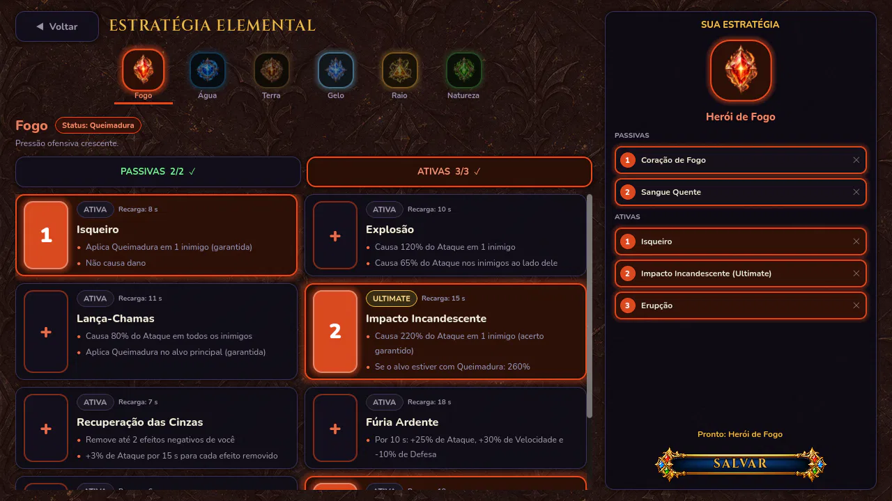
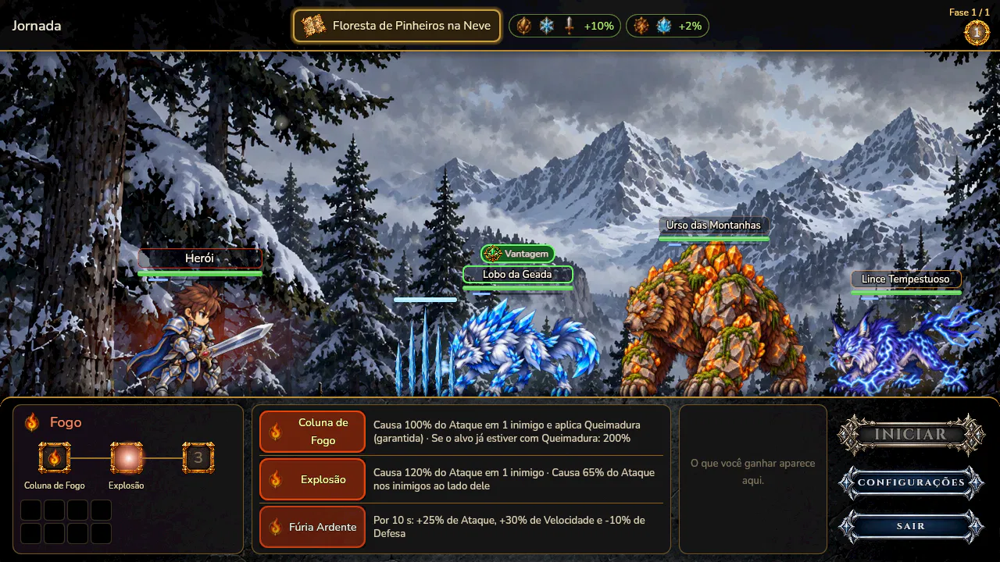

Preparação
A luta começa pausada. No alto aparecem o terreno e os bônus dele; sobre cada inimigo, o Elemento e o selo de Vantagem ou Desvantagem. Analise com calma e toque em Iniciar.
Guia do aventureiro
Do primeiro Ataque Básico à Ultimate: tudo o que você precisa saber para vencer em Entherya. Leva uns cinco minutos.
Capítulo 1
Elemental Knights é um RPG de estratégia. Você não controla cada golpe: você prepara o herói, escolhe o Elemento certo e decide a hora de cada habilidade. O resto acontece em tempo real.
Capítulo 2
No Lobby, toque em Definir Estratégia Elemental. Escolha um dos seis Elementos e, dentro dele:
A estratégia salva é o Elemento com que o herói entra nas lutas. Antes de cada jornada, a tela de escolha do Elemento deixa você trocar de Elemento e ajustar as habilidades.

Capítulo 3

A luta começa pausada. No alto aparecem o terreno e os bônus dele; sobre cada inimigo, o Elemento e o selo de Vantagem ou Desvantagem. Analise com calma e toque em Iniciar.
Cada personagem tem uma barrinha embaixo do nome. Todas começam vazias e enchem ao mesmo tempo; quem tem mais Velocidade enche mais rápido. Quando a barra enche, aquele personagem age, e a barra recomeça do zero.
Se você não pediu nenhuma habilidade, o herói faz sozinho um Ataque Básico no primeiro inimigo da fila (Frente, depois Central, depois Retaguarda). O Ataque Básico também tem chance de aplicar o efeito especial do seu Elemento.
Toque numa habilidade para colocá-la na Fila, que tem 3 lugares. Quando a barra do herói enche, ele usa a primeira da Fila, e as outras andam uma posição. Se a primeira ainda estiver em Recarga, ela é pulada. Fila vazia: Ataque Básico.
A maioria das habilidades acerta o primeiro inimigo vivo. Algumas atingem também os vizinhos do alvo, outras todos os inimigos, e as de reforço agem no próprio herói. A descrição de cada uma diz qual é.
A luta acaba quando todos os inimigos ou o herói caem. Numa jornada, cada vitória leva à próxima Fase, e a última é contra um Chefe. As recompensas aparecem no painel da direita.
A Fila não é para encher e esquecer. Guarde a Ultimate para quando o Chefe entrar, aplique o efeito especial antes das habilidades que ganham força com ele (como a Coluna de Fogo, que causa o dobro de dano em quem já está queimando) e use os reforços antes dos golpes mais fortes.
Capítulo 4
Todo golpe direto passa por estas etapas, nesta ordem:

VantagemFogo › Gelo › Natureza › Terra › Raio › Água › Fogo

DesvantagemAtacar quem vence o seu Elemento corta o dano das Habilidades pela metade.
Esquiva, Bloqueio e Crítico nunca passam de 50% de chance. Danos contínuos, como Queimadura e Envenenamento, ignoram Defesa, Esquiva e Bloqueio, mas nunca são Críticos.
Capítulo 5
Cada Elemento tem um efeito especial. O Ataque Básico tem 10% de chance de aplicá-lo, e muitas Ativas aplicam com certeza. Os efeitos têm intensidade de I a V: reaplicar sobe a intensidade e estende o tempo (20 s na primeira vez, +5 s a cada reaplicação, até 30 s).

Dano contínuo que cresce com a intensidade. Nos níveis altos, também reduz o Ataque do alvo.

Reduz a Velocidade: a Barra ATB do alvo enche mais devagar. Nos níveis altos, também reduz a Evasão.

Trava a Barra ATB do alvo por alguns segundos e reduz a Velocidade e o dano que ele causa.

Dano contínuo. Com mais intensidade, reduz a Precisão do alvo e devolve parte do dano como Vida para quem envenenou.

Reduz a Defesa do alvo. Nos níveis altos, as habilidades dele demoram mais para recarregar.

Empurra a Barra ATB do alvo para trás e reduz a Velocidade, a Evasão e o dano dele, que passa a receber mais dano.
O Grimório, no Lobby, mostra o que cada intensidade faz, número por número.
Capítulo 6
Quanto dano o herói aguenta antes de cair.
A base de todo dano, inclusive dos danos contínuos que você aplica.
Reduz o dano recebido e aumenta a chance de Bloqueio.
Enche a Barra ATB mais rápido: mais ações por luta.
Diminui a chance de o inimigo esquivar.
Aumenta a sua chance de esquivar.
Cada Classe aproveita os atributos de um jeito: o mesmo Ponto rende mais Defesa no Cavaleiro e mais Evasão na Ladra. No Perfil, cada atributo mostra quanto o Ponto rende para a sua Classe.
Capítulo 7
Capítulo 8
Ficou alguma dúvida? Mande uma mensagem para @elementalknights no Instagram ou escreva para irontyro.games@gmail.com.